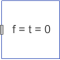

ZeroForceAndTorqueSet force and torque to zero |

|
Information
This information is part of the Modelica Standard Library maintained by the Modelica Association.
Set force and torque vectors on frame connector frame_a to zero.
Connectors (1)
| frame_a |
Type: Frame_a |
|---|
Used in Components (4)
|
Modelica.Mechanics.MultiBody.Joints
Free motion joint with scalar initialization and state selection (6 degrees-of-freedom, 12 potential states) |
|
|
Modelica.Mechanics.MultiBody.Sensors
Measure absolute kinematic quantities of frame connector |
|
|
Modelica.Mechanics.MultiBody.Sensors
Measure relative kinematic quantities between two frame connectors |
|
|
Modelica.Mechanics.MultiBody.Visualizers
Visualizing a planar rectangular surface |